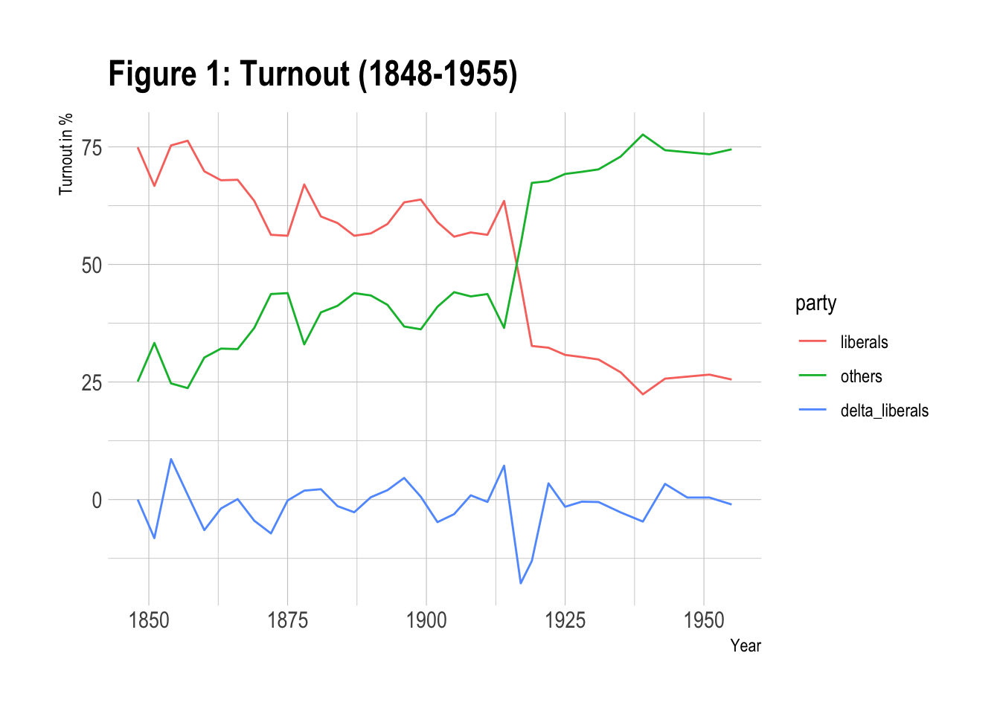
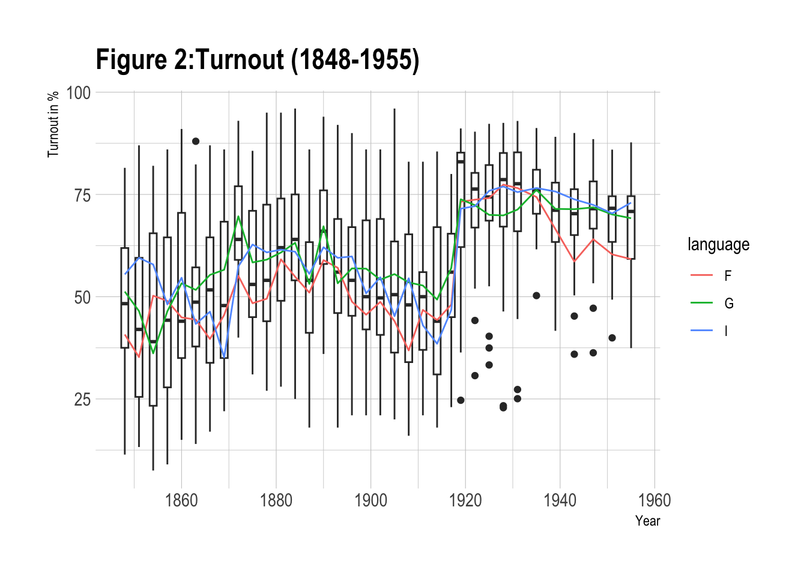
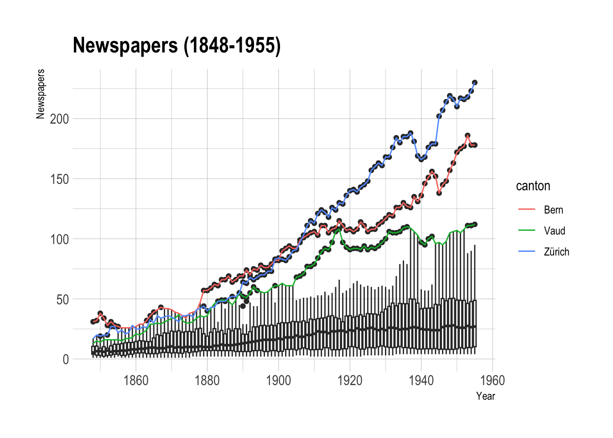

The Swiss Federal System
Federalism and direct democracy are major features of the Swiss political system. Every year multiple ballots or “Abstimmung” are held in each canton where citizens are required to vote on important communal decisions such as governmental spendings, investment in infrastructure, schooling or defense issues. In this work I will not focus on this aspect of the Swiss direct democracy but on the Swiss federal elections. Elections or “Wahlen” differ from ballots in the sense that they are periodically repeating events with a homogenous character compared to very heterogenous aspects in public-affairs-decision making (Poledna, 2021). Within the period of investigation the Swiss federal election for the Swiss parliament were held roughly every three to four years. The electoral system is based on the Swiss federal constitution of 1848 which grants every adult male citizens aged 20 + the right to vote. Cantons are given freedom regarding the exact implementation of the voting law. This includes the enforcement of sanctioned compulsory voting rules which were introduced by 13 cantons for particular election years during the period of investigation (Hangartner et al., 2011). The first election took place in 1848 and was then held every 3 years until 1931 with 1919 being an exception. In 1931 the term of office was extended to four years.
The year 1918 marked one of the most important turning points in Swiss electoral history. After being one of the main topics of public political discourse over the years and after two failed referenda, the electoral system switched from being held in a majoritarian fashion where the “winner takes it all” to a proportional system where parliamentary seats were allocated according to the percentage of votes (Petrov, 2018). As a result, smaller parties that were highly disadvantaged under the previous majoritarian system, gained governmental influence after the reform. Until then, Switzerland’s political system was mostly dominated by liberal-radical parties (Gruner et al., 1990). The event of 1918 was accompanied by social uprising and political conflict. In a phase of economic instability stemming from the repercussions of the First World War, the urge for political change was rising. After liberal-radicals again won the parliamentary elections in 1917 despite of the salient drop in vote share, discontent about political stagnation lead to a series of strikes and finally culminated in a general strike which started in Zürich and quickly spread into the whole of Switzerland. Under the pressure of the general strike the election planned for 1920 was advanced to 1919.
Afterwards, liberal-radical groups lost their dominance which was then followed by the rise of social- democratic, conservative and the so called Bauern-, Gewerbe- und Bürger parties (Petrov, 2018). Figure 8 depicts the aggregated vote share of the liberal parties FL (Freisinnige Linke) and LM (Liberale Mitte), the gains and losses the liberals registered between elections (D_liberals), as well as the aggregated vote share of all other elected parties in the federal elections (1848-1955). In 1893 the FL changed its name to FDP (Freisinnig Demokratische Partei der Schweiz) and in 1914 the LM changed its name to LPS (Liberale Partei der Schweiz).
Among liberal parties, the FL/and later FDP always received the highest vote share. Up to 1928 the FL/FDP constantly achieved the highest vote share among all parties. After that, it was surpassed by the rise of the social democrats SP (Sozialdemokratische Partei der Schweiz).
Striking is the sharp drop of liberal vote share in the election of 1917 one years before the introduction of the proportional system and the following gradual diminution.
TURNOUT_31 <- read_excel(here("Data", "Historical_Background", "Voteshare_liberals.xlsx"))
A <- TURNOUT_31
A = A %>% mutate(liberals = FL + LM)
A = A %>% mutate(others = 100 - liberals)
A = A %>% mutate(delta_liberals = diff_Fl + diff_LM)
A = A %>% select(-c(FL, LM, diff_Fl, diff_LM))
A_long<- gather(A, party, outcomme, liberals:delta_liberals, factor_key=TRUE)
ggplot(data = A_long, aes(x = Year, y = outcomme, group = party, colour = party)) +
geom_line() +
theme_ipsum() +
ggtitle("Figure 1: Turnout (1848-1955)") +
labs(x = "Year", y = "Turnout in %") 
Development of Voter Turnout
Looking at the entire voting history of federal elections, Switzerland experienced an W-shape development in electoral participation. In the first elections starting 1848 roughly 44.6% of eligible voters went to vote. During the period of political dominance by the liberal radicals before 1919, turnout averaged 54.8%. Between 1919 and 1935, after the introduction of the proportional voting system, electoral participation reached an average level of 80%. In the period after the extension of the term in office to 4 years, participation decreased to 60%. Starting 1979, which lies outside of my investigation, turnout dropped for the first time below 50% (Neidhart, 2017).
i_am("index.qmd")
TURNOUT_31 <- read_excel(here("Data", "Historical_Background", "TURNOUT.xlsx"))
A <- TURNOUT_31
ggplot(data = A, aes(x = Year, y = Turnout, group = Year)) +
geom_boxplot() +
stat_summary(fun.y=mean, aes(group=language, colour = language), geom = "line", lwd=0.5, lty=1) +
theme_ipsum() +
ggtitle("Figure 2:Turnout (1848-1955)") +
labs(x = "Year", y = "Turnout in %") 
Figure 2 depicts boxplots per election term for turnout within the period 1848-1955. Striking is the transition between 1917 and 1919 where electoral participation increased significantly throughout all language regions. Also, after 1919 there seems to be an increased number of outlier cantons which experienced significantly lower turnout results than the majority. Noticeable is also that voter turnout in French-speaking regions is almost always lower compared to the German ones. Italian speaking regions lie mostly in between.
Expansion of Newspapers
The development of the press went along the rise of the bourgeoise in the 19th century. Previously, a phase of slow growth in newspapers preceded until the end of the 18th century. The years after the breakdown of the “13örtige Eidgenossenschaft” under the Helvetic republic with the proclamation of press freedom in 1798, the start of the “Regeneration”- period in 1831, and the establishment of the national congress in 1848 (embedding freedom of the press into the constitution) all experienced a large increase in newspaper founding (Blaser, 1954; Clavien et al. 2015).
Switzerland’s liberal press regulations facilitated the formation of many opinion presses which, due to the country’s small scale, were often addressing a local audience on regional politics. During the period of regeneration opinion presses were an important factor through which press freedom was promoted. The commercialization of the press started differently for different language regions: First in the French then in the German and not until the end of the 20th century in the Italian speaking regions.
In German language regions the professionalization at the end of the 19th century was followed by the foundation of the association of Swiss press (Verein der Schweizer Presse) and the foundation of the Swiss publishers association (Schweizerischer Verlegerverband). Technical improvements like the introduction of rotary printing in 1890 and the linotype machine in 1893 greatly improved productivity and reduced the costs of printing. The emergence of news agencies facilitated the collection of information for the associated newspapers; and the development of infrastructure for distribution and postal services enabled large scale circulation. Investment in new technologies mainly required funding through advertisement (Genzkow et al. 2014, Clavien et al 2014), which was followed by the emergence of profit oriented non-partisan newspapers. On the demand site, increasing literacy rates starting from 1850 can also account for the expansion of newspapers (Messerli and Mathieu, 1992, p. 177-178). In German speaking regions the appearance of literature clubs (Lesegesellschaften) provided an inexpensive access to newspapers which reasonably extended readership.
load(here("Data", "Historical_Background", "N_combined12.Rda"))
A <- N_combined12
names(A)[names(A) == "Kanton_ID"] <- "canton"
ggplot(data = A %>% subset(Year >= 1848) %>% subset(Year <= 1955),
aes(x = Year, y = numb_news, group = Year)) +
geom_boxplot() +
stat_summary(fun.y=mean, aes(group=canton, colour = canton),
geom = "line", lwd=0.5, lty=1,
data = . %>% filter(canton %in% c("Zürich" , "Bern", "Vaud"))) +
theme_ipsum() +
ggtitle("Newspapers (1848-1955)") +
labs(x = "Year", y = "Newspapers") 
The graphics depict different aspects of Swiss newspaper growth. Figure 10 clearly shows that the net increase of newspapers is positive over the years (presented are yearly boxplots of newspaper numbers per canton). Notable is that the cantons Bern, Vaud and Zürich exhibit significantly larger newspaper numbers compared to the rest of Switzerland.